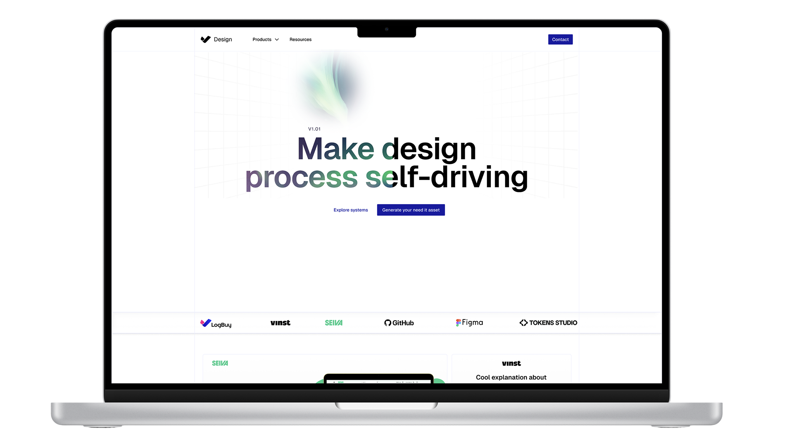
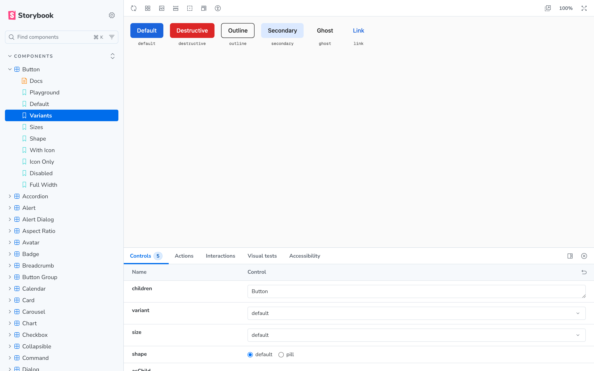
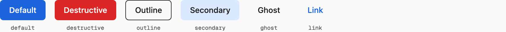
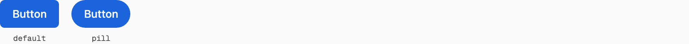
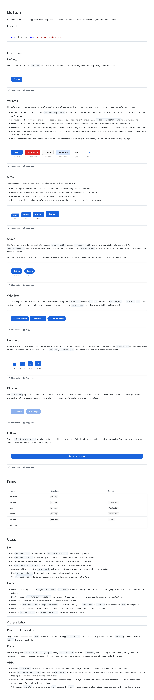

Design System · Figma → Storybook → Production
Three brands, designers in Figma, engineers in code — and the two drifting apart. I built the connective tissue between them.
Tokens live in Figma and sync to GitHub. A build step turns them into code. Components live in Storybook and ship through a registry that deploys on Vercel — change a color in Figma and it reaches production with nobody re-typing a hex. I'm a product designer, and I built the whole pipeline myself, with AI as my engineering partner.

A design system isn't a folder of components. It's the shortest path between a decision and the thing that ships — and I wanted that path to run on its own.
Visma is one of Europe's largest software groups — millions of customers across dozens of markets. Inside it, Advantage is one of three sibling design systems I help shape, each its own brand with its own scope. They can't share a codebase, but they all have the same job: make the right design decision the easiest one to ship.
Advantage is where I pushed that idea the furthest. The brief I set myself was simple to say and hard to do: one source of truth in Figma, flowing into code on its own, with the brand built into every step instead of left to good intentions.
The Problem
Every team has the same Figma library and the same good intentions. The drift creeps in between the tools, in the gaps nobody owns:
The gap was never the components.
It was the pipeline between decision and default.
Opportunity
That question reframed the whole thing. I wasn't shipping a UI kit; I was designing the shortest distance between a design decision and the code that honors it — and making the automated path the easy one, so the right thing happened by default.
The Operating Model
A single decision in Figma travels through six automated stages and arrives as installable, themed, accessible code. Nothing is hand-copied between stages — each one is generated from the one before it.

Layer 01 · Tokens
Every value originates in Figma Token Studio and is exported to tokens.json. No one edits color in code. The key decision here was separating raw palette from semantic intent: components never reference --brand-primary directly — they reference --general-primary. Swap the brand, the components don't move.
img/ads/figma-tokens.png and swap the image in.
// Token Studio JSON → kebab-case CSS variables export default { tokens: merged, preprocessors: ['tokens-studio'], platforms: { css: { transformGroup: 'tokens-studio', transforms: ['name/kebab'], // --general-primary buildPath: 'build/css/', files: [{ destination: 'variables.css', format: 'css/variables' }], }, }, };
Layer 02 · The Bridge
Rather than hard-coding values into a Tailwind config (which would instantly drift from Figma), a single @theme block aliases Tailwind's utility names onto the semantic tokens. Developers write familiar classes like bg-primary; under the hood every one resolves to a Token Studio value. Change the token, every utility updates.
@import "tailwindcss"; @import "../../../build/css/variables.css"; /* semantic tokens */ @theme { --color-primary: var(--general-primary); /* Vivid Blue */ --color-accent: var(--general-accent); /* orange — highlights */ --color-ring: var(--general-primary); /* focus = primary */ --font-sans: var(--font-family-headings); --radius-2xl: calc(var(--rounded-2xl) * 1px); /* 25px card standard */ }
Layer 03 · Distribution
This was the most consequential call. Instead of publishing a versioned React library that every app imports and fights with, Advantage ships its components as a shadcn registry. Consumers run one command and the source lands in their repo — theirs to read, theirs to extend — with the design tokens travelling along as a dependency so the theme is never optional.
# pulls the real, themed source into your repo — tokens come with it npx shadcn@latest add @advantage/button @advantage/input @advantage/dialog


Layer 04 · Quality
Every component carries its own docs and tests. Storybook renders the usage, do's and don'ts, and props; an accessibility addon flags violations in the panel; Vitest + Playwright run the stories as browser tests; and Chromatic catches visual regressions before they merge. The system can't drift quietly — something fails loudly when it does.

The AI Layer
Two things are true here. First, I built this pipeline as a product designer, with AI as my engineering partner — the token build, the registry generator, the Storybook setup, the Vercel deploy. Second, I made the system control the AI back: coding agents now write a lot of UI, and left alone they invent off-brand components. So the agent is a first-class consumer, given rules it reads, a registry it can discover, and a default that's easier than inventing.
# Advantage Design System — rules for AI agents The golden rule Never hand-write a component that already exists in the Advantage registry. Install it: npx shadcn@latest add @advantage/<name> Hard rules · Use semantic tokens only (--general-*) — never raw hex · Primary actions = Vivid Blue pill CTAs; orange is highlight-only · Greens are reserved for positive data viz — never decoration · Focus rings via --focus-ring; hit targets ≥ 24px (44px mobile)
MUST Use semantic tokens in components — never raw palette tokens MUST Two-layer shadows (ambient + direct) — never a single layer MUST Primary CTAs use the pill shape in Vivid Blue SHOULD Use the standard shape for secondary / dense UI NEVER Use the orange accent as a primary action color NEVER Hardcode a hex value — all color traces to a CSS variable
Add a primary “Request quote” call-to-action to the supplier card.
Reading AGENTS.md → the Advantage registry already has a Button. I won't hand-write one. Discovering it via the shadcn MCP server and installing:
Per the guidelines, a primary CTA uses the pill shape in Vivid Blue — so I'm rendering <Button shape="pill">Request quote</Button>. Tokens and focus ring come from the system; nothing hardcoded.
The mechanism behind it: a Storybook MCP server exposes the live registry so an agent can list, search, and install real components instead of guessing — and project-level CLAUDE.md + GUIDELINES.md load the brand rules into the agent's context automatically. The on-brand path becomes the shortest path.
Key Decisions
Tokens are authored once, in Token Studio, and flow outward. Code never owns a value.
Components speak intent (--general-primary), never palette. Re-brand without touching a component.
Consumers own the source and the tokens travel with it — adoption without lock-in or version wars.
Rules-as-code plus MCP discovery make the on-brand choice the default — for people and AI alike.
What it enables
Reflection
I'm a product designer, not a platform engineer. With AI as a build partner, I shipped the whole pipeline myself — tokens, build, registry, docs, deploy. The design was making the right thing the easy thing. The AI was how one person got it built.